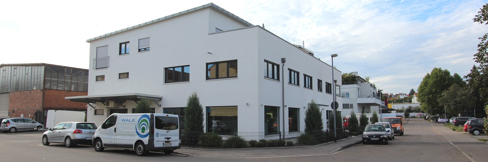
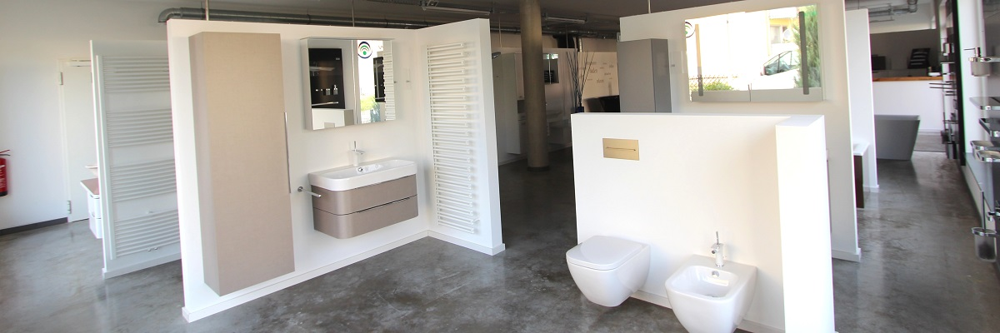

Korntal-Münchingen
Technik, die man erleben kann.
Walk präsentiert am eigenen Standort Heizungstechnik in Aktion und Sanitärtechnik zum Erleben und Genießen.
Ausstellung entdecken ↓Siebenbürgenstraße 6 · 70825 Korntal-Münchingen0711 8387500

Am Standort
Ein Betrieb mit Raum für Beratung.
Die neue Struktur baut auf dem sichtbar eigenen Firmensitz auf und führt Interessierte ohne generische Motive direkt in die drei öffentlich genannten Fachbereiche.
Heizung
Sanitär
Klima

Ausstellung
Sehen. Planen. Entscheiden.
Die Aufnahme zeigt den öffentlich dokumentierten Ausstellungsbereich. Sie gibt der neuen Seite einen echten räumlichen Bezug und ersetzt beliebige Bad- oder Heizungsbilder.
Karriere
SHK-Fachwissen gesucht.
Die Website sucht öffentlich nach Anlagenmechanikerinnen und Anlagenmechanikern SHK. Genannt werden Kundendienst, Wartung und Instandsetzung sowie eine 4-Tage-Woche.
GesuchtAnlagenmechaniker SHK
BereicheKundendienst · Wartung · Instandsetzung
Arbeitsmodell4-Tage-Woche
Kontakt
Einfach
vorbeikommen.
Die öffentlich sichtbaren Kontaktwege führen direkt zum Standort in Korntal-Münchingen. Vor einer Veröffentlichung werden Besuchs- und Kontaktabläufe final bestätigt.
Telefon0711 8387500
E-Mailinfo@walk-korntal.de
AdresseSiebenbürgenstraße 6
70825 Korntal-Münchingen
70825 Korntal-Münchingen
Gerne stimmen wir die Details in einem persönlichen Gespräch mit Ihnen ab.
Unverbindliche Anfrage
Lassen Sie uns
ins Gespräch kommen.
Schildern Sie kurz Ihr Anliegen. Über „Anfrage per E-Mail vorbereiten“ öffnet sich Ihr E-Mail-Programm mit der öffentlich angegebenen Geschäftsadresse als Empfänger.